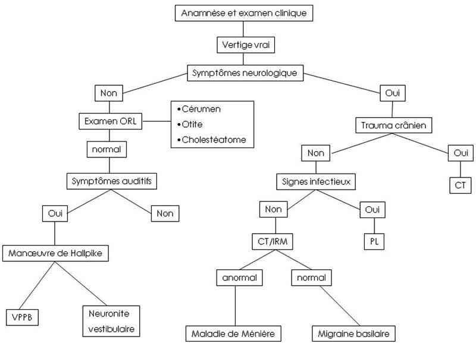

Bienvenue Sur Medical Education
Vertiges de l'enfant
EnfantSpécialité : neurologie / orl / pédiatrie /
Points importants
-
Le vertige est une illusion de mouvement et un symptôme subjectif
-
Chez l'enfant, le vrai vertige est peu fréquent
-
Cause principale : l’otite
-
Malgré la bénignité de la plupart des étiologies, la recherche d’une pathologie centrale oblige à la plus grande rigueur dans les différentes étapes du diagnostic.
Présentation clinique / CIMU
SIGNES FONCTIONNELS
Présentation clinique / CIMU
SIGNES FONCTIONNELS
Généraux
- Enfant anxieux (le déplacement, nécessaire pour se rendre aux Urgences, a souvent intensifié les symptômes)
-
Troubles neurovégétatifs :
- nausées
- pâleur
- sueurs
- Fièvre
- Douleurs (en cas d’otite)
Symptômes associés
- Acouphènes et/ou baisse de l’audition-surdité (troubles cochléaires)
- Céphalées
- Signes neurologiques (pathologies du SNC)
- Vomissements
- Douleurs auriculaires
CONTEXTE
Terrain
- HTA
- Traumatisme crânien
- Pathologies neurologiques préexistantes
Traitement usuel
- Anti-vertigineux
- Anxiolytiques
Antécédents
-
Personnels :
- épilepsie
- diabète ou hypoglycémies récurrentes
- anémie
- drépanocytose
- prise médicamenteuse
- troubles de la vue (myopie…)
- vertiges
-
Familiaux :
- migraine
- affection neurologique
Circonstances de survenue
- Circonstances déclenchantes (lors de l’immobilité ou à l’occasion de mouvement)
-
Signes associés :
- auditifs et neuro-végétatifs
- torticolis
- mouvements anormaux
-
Conséquences du vertige :
- chute
- perte de connaissance
- céphalées
- Heure de survenue
EXAMEN CLINIQUE
Se focaliser sur l’examen neurologique dans le but d’éliminer une possible atteinte centrale : analyse de la poursuite oculaire, contrôle postural, recherche d’un nystagmus, signes cérébelleux
Recherche d’une surdité
Neurologique complet
- Signes de localisation
- Signes d’atteinte cérébelleuse
Cardiovasculaire
- Recherche d’une hypotension orthostatique
ORL
- Bilan auditif et vestibulaire
- Recherche de signes d’otite
Examen ophtalmologique
- Acuité visuelle
- Oculomotricité
- Convergence
- Champ visuel
- Etude de la réfraction
- Bilan orthoptique
EXAMENS PARACLINIQUES SIMPLES
- Hémoglobine capillaire
- Glycémie capillaire
- Audiométrie-Vestibulométrie (recherche de déficit vestibulo-spinal ou de déficit vestibulo-oculaire)
CIMU
- Tri 3-5
Signes paracliniques
BIOLOGIQUES
-
Habituellement non indiqué
IMAGERIE
Scanner cérébral
- Pour étudier les structures osseuses de l’oreille moyenne, de l’oreille interne et du rocher, surtout en cas de suspicion de labyrinthite ou dans un contexte d’otospongiose ou traumatique du rocher
IRM cérébrale
- En cas de suspicion de tumeur de la fosse postérieure ou de l'angle ponto-cérébelleux (neurinome du VIII) - idéalement en urgence (à défaut : scanner)
Diagnostic étiologique
Exclure un processus expansif de la fosse postérieure (< 1% des cas, dans ce cas, le vertige est rarement isolé) : scanner
Atteintes du SNC (rares)
- Cérébellite
- Maladies neurodégénératives
- Accidents vasculaires : scanner ou IRM
Equivalent migraineux (25%) dont vertige paroxystique bénin de l’enfant (vertiges de moins de 10 min bien tolérés, peu ou pas de vomissements, aucun retentissement sur les activités entourant l’épisode, et sans céphalées; bilan normal; évolution favorable en 6 mois –1 an) : anamnèse
- Céphalées
- Vomissements
- Photophobie
- ATCD familiaux de migraine
- Début vers 5-10 ans (parfois dès 2 ans)
Etiologies ORL
- Névrites vestibulaires
- Labyrinthites sur otites moyennes aiguës ou chroniques
- Maladie de Ménière
- "Delayed vertigo" (vertiges méniériformes survenant à la suite des oreillons ou d’un traumatisme de l’oreille interne)
- Canalolithiase : audiométrie-vestibulométrie
- Malformations d’oreille interne (en particulier Mondini avec dilatation de l’aqueduc du vestibule) : scanner
- Traumatismes : dépister les fistules périlymphatiques (surdité mixte ou de perception, d’autant plus évocatrice que fluctuante ou s’aggravant. Fracture du rocher trans-labyrinthique ou fracture de l’étrier): scanner.
-
Causes ophtalmologiques :
- myopie
- hypermétropie
- astigmatisme
- troubles de la convergence (symptômes apparaissent souvent après l’école, en fin de journée; céphalées associées dans 40% des cas)
-
facteurs déclenchants fréquents :
- télévision
- ordinateur ou jeux vidéo
Vertiges psychogènes
- Surtout vers 8-10 ans
- Vertiges intenses et souvent caricaturaux, vagues, mal décrits; pas d’anomalie objective
Hypotension orthostatique
- Non rare en période de croissance prépubertaire
Diagnostic différentiel
-
Otite-labyrinthite et autres pathologies ORL
-
Equivalents migraineux
-
Malaise vagal - hypotension orthostatique
-
Diplopie ou autre pathologie ophtalmologique
-
Psychogène
-
Troubles métaboliques (anémie, hypoglycémie)
-
Pathologies du SNC (surtout fosse postérieure)
Traitement
TRAITEMENT PREHOSPITALIER / INTRAHOSPITALIER
Traitement
TRAITEMENT PREHOSPITALIER / INTRAHOSPITALIER
Stabilisation initiale
- Repos
-
Anti-vertigineux :
-
par voie parentérale :
- scopolamine en patch
- acétyl-leucine si symptômes sévères (indication chez l’adulte)
-
par voie orale :
- acétyl-leucine si symptomatologie sévère (indication chez l’adulte)
-
par voie parentérale :
- Anxiolytiques (si agitation importante, par exemple hydroxyzine)
- Réhydratation si pertes importantes par les vomissements
Suivi du traitement
- Indications chirurgicales ORL : en cas de vertige violent et subintrant et après échec du traitement médical
- Traitement étiologique si secondaire à pathologie du SNC
- Pas de traitement pour les vertiges paroxystiques
MEDICAMENTS
Scopolamine patch
- 1 patch, à appliquer derrière l’oreille, toutes les 72 heures
Acétyl-leucine (indication chez l’adulte)
-
Voie parentérale :
- 1 ampoule par jour IVD
- la durée du traitement est variable selon l'évolution clinique
-
Voie orale :
- 1 g/j, soit 1 comprimé matin et soir
- la durée du traitement est variable selon l'évolution clinique
Hydroxyzine suspension buvable 2 mg/mL
- De 30 mois à 6 ans (10 à 20 kg) : 5 à 10 mL de sirop/j
- De 6 à 10 ans (20 à 30 kg) : 10 à 15 mL de sirop/j
- De 10 à 15 ans (30 à 40 kg) : 15 à 20 mL de sirop/j
Surveillance
CLINIQUE
-
Vertiges
-
Vomissements
-
Céphalées
-
Apparition de mouvements anormaux
-
Apparition de troubles oculomoteurs
PARACLINIQUE
-
Habituellement non indiquée
Devenir / orientation
CRITERES D’ADMISSION
Devenir / orientation
CRITERES D’ADMISSION
Hospitalisation en service de pédiatrie pour
- Bilan diagnostique de vertige persistant
- Echec des traitements
CRITERES DE SORTIE
- Enfant asymptomatique ou avec vertiges légers pouvant être géré au domicile
ORDONNANCE DE SORTIE
Scopolamine patch
- 1 patch, à appliquer derrière l’oreille, toutes les 72 heures si symptômes gênants
Hydroxyzine suspension buvable 2 mg/mL (si agitation importante)
- De 30 mois à 6 ans (10 à 20 kg) : 5 à 10 mL de sirop/j
- De 6 à 10 ans (20 à 30 kg) : 10 à 15 mL de sirop/j
- De 10 à 15 ans (30 à 40 kg) : 15 à 20 mL de sirop/j
RECOMMANDATIONS DE SORTIE
- Faire marcher l’enfant à nouveau, dès que possible (éviter le repos au lit en position allongée)
- Reconsulter si aggravation des symptômes, apparition de vomissements, céphalées, mouvements anormaux ou troubles de la vision
Mécanisme / description
-
Le vertige est la conséquence d’un dysfonctionnement de chacune des structures du système vestibulaire : lésion du labyrinthe postérieur ou des voies et centres nerveux vestibulaires (VIII, noyaux vestibulaires bulbaires).
-
Les informations provenant de chacun des vestibules sont véhiculées dans les neurones vestibulaires et parviennent aux noyaux vestibulaires où elles sont comparées. Lors d’une rotation vers la droite, on observe une dépolarisation des cellules sensorielles du canal semi-circulaire horizontal droit responsable d’une augmentation de la fréquence des potentiels d’action des neurones du nerf vestibulaire droit et des neurones du noyau vestibulaire droit. Cette asymétrie d’information au niveau des noyaux vestibulaires est analysée comme un mouvement de rotation. Le fonctionnement normal du système vestibulaire est sous contrôle cérébelleux et reste sous-cortical, en-dehors de toute perception consciente.
-
C’est ainsi que le vertige lié à une altération de fonctionnement peut survenir dans une altération :
-
du récepteur : endolymphe des canaux semi-circulaires, système otholithique du saccule et de l’utricule :
-
trouble pressionnel endolabyrinthique de la maladie de Ménière
-
canalolithiase du vertige positionnel paroxystique bénin
-
ototoxicité
-
traumatismes
-
de la VIIIème paire crânienne (contingent vestibulaire du nerf auditif) :
-
inflammatoire : névrite du VIII
-
traumatique : traumatisme crânien avec section du VIII
-
tumorale : neurinome de l’acoustique
-
des noyaux vestibulaires bulbaires et de l’archéocervelet
-
lésions tumorales
-
hématomes
-
ischémie
Algorithme
-
Algorithme vertiges de l’enfant
-
du récepteur : endolymphe des canaux semi-circulaires, système otholithique du saccule et de l’utricule :
- trouble pressionnel endolabyrinthique de la maladie de Ménière
- canalolithiase du vertige positionnel paroxystique bénin
- ototoxicité
- traumatismes
-
de la VIIIème paire crânienne (contingent vestibulaire du nerf auditif) :
- inflammatoire : névrite du VIII
- traumatique : traumatisme crânien avec section du VIII
- tumorale : neurinome de l’acoustique
-
des noyaux vestibulaires bulbaires et de l’archéocervelet
- lésions tumorales
- hématomes
- ischémie
Algorithme
- Algorithme vertiges de l’enfant
 _747 Algorithme Algorithme : vertiges de l'enfant
Bibliographie
-
Baloh RW, Honrubia V, Jacobson K. Benign positional vertigo: clinical and oculographic features in 240 cases. Neurology 1987;37(3):371-8.
-
Baloh RW, Jacobson K, Honrubia V. Idiopathic bilateral vestibulopathy. Neurology 1989;39(2 Pt 1):272-5.
-
Collard N, Sauvage JP. Vertiges aigus. Rev Prat 2000; 50:2004-2007.
-
Hanley K, O’Dowd T, Considine N. A systematic review of vertigo in primary care. Br J Gen Pract 2001; 51:666-671.
-
Hanley K, O’Dowd T. Symptoms of vertigo in general practice: a prospective study of diagnosis. Br J Gen Pract 2002; 52:809-812.
-
Kerber KA, Meurer WJ, West BT, Fendrick AM. Dizziness presentations in U.S. emergency departments, 1995-2004. Acad Emerg Med Aug 2008;15(8):744-50.
-
Tran Ba Huy P, de Waele C. Les Vertiges et le praticien. John Libbey Eurotext éd.1996.
Auteur(s) : Luigi TITOMANLIO, Irène D'AGOSTINO